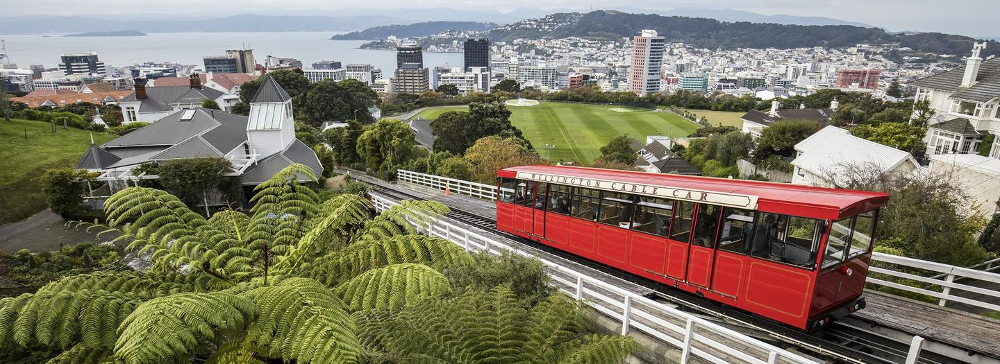

Sightseeing
Wellington is the political capital of New Zealand. The city is compact, cultured and full of character. Nestled between the harbour and the hills, the downtown area is ideal for explorations on foot - shopping, cafes, transport, accommodation and the city’s major attractions are compressed into an area that’s conveniently walkable.
Tell me more